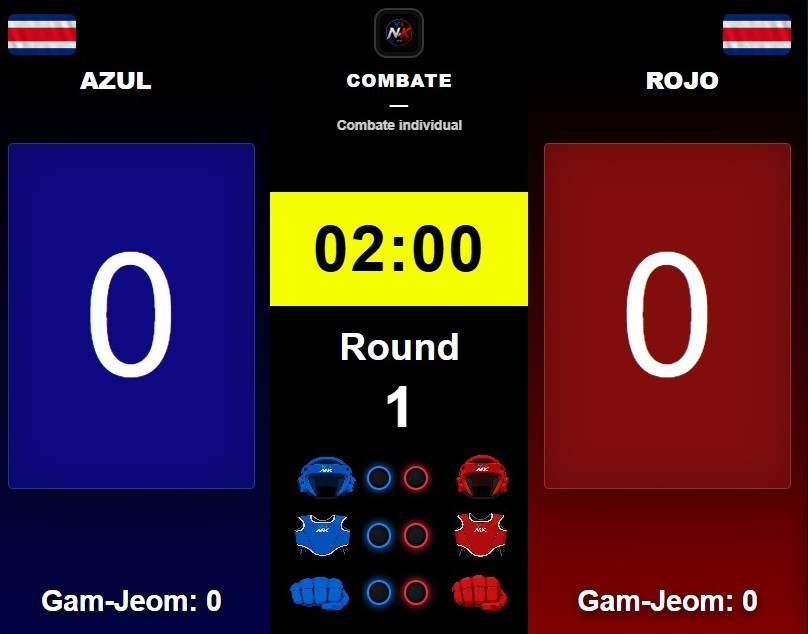
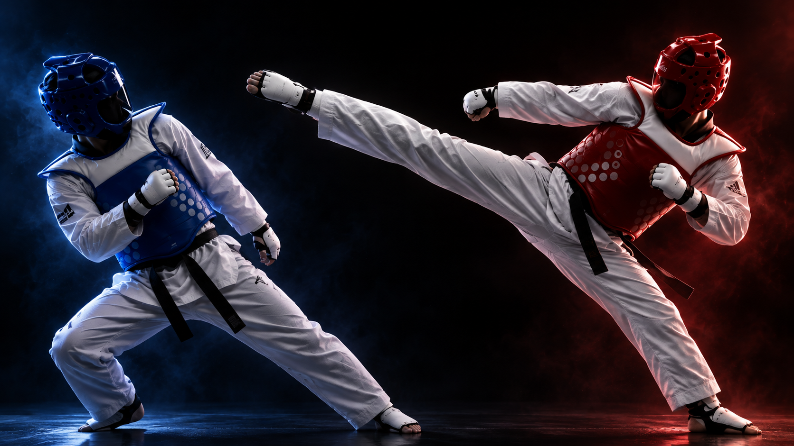
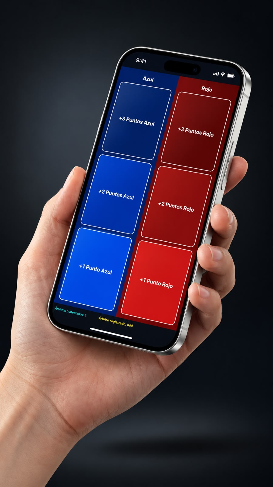
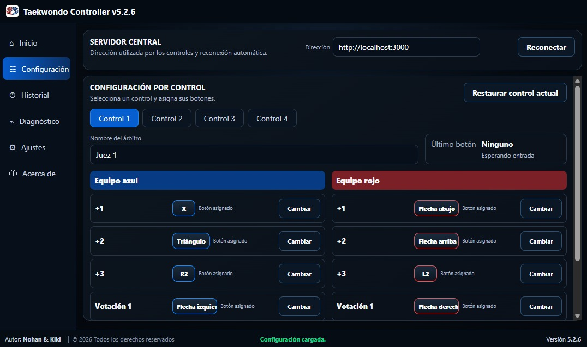
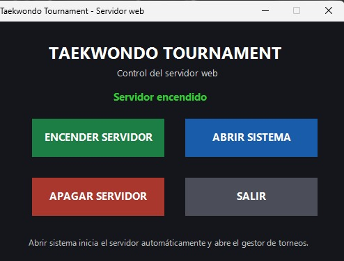

01
Marcador en tiempo real
Puntaje azul y rojo, cronómetro, round, Gam-Jeom e indicadores visuales con una lectura inmediata y limpia.

Centraliza la operación del combate y mantiene la información clara para la mesa, los atletas y el público.

Cada módulo fue pensado para resolver una necesidad real dentro del torneo: leer rápido, actuar rápido y mantener el control del combate sin confusión.
Puntaje azul y rojo, cronómetro, round, Gam-Jeom e indicadores visuales con una lectura inmediata y limpia.

Inicia el combate, pausa, corrige puntos, aplica faltas, abre replay y controla las acciones principales desde una sola pantalla.

Opera el sistema con control físico o desde el teléfono. El acceso móvil puede compartirse por QR y facilita la operación en mesa.


Crea campeonatos, organiza categorías, maneja BYE y sigue el avance automático de cada llave hasta la final.

Revise acciones del combate cuando haga falta y compruebe controles antes del torneo con la app de diagnóstico y configuración.

El launcher pone en marcha el sistema y la configuración permite comprobar cada control antes de comenzar. Así la mesa llega preparada al primer round.


Un proceso directo para que la mesa configure el sistema, compruebe los controles y comience el combate con seguridad.
Abre N&K Scoring desde el launcher y configura los datos del combate.
Revisa los controles PS5 o comparte el acceso móvil mediante el código QR.
Gestiona tiempo, puntos, Gam-Jeom, replay y avance del torneo desde el sistema.
N&K Scoring nació del trabajo de Nohan y Kiki, y de una necesidad muy real: en competencia hacía falta una forma más clara y más moderna de controlar el combate.
Queríamos una herramienta que se sintiera humana al usarla: simple al operar, firme bajo presión y pensada para el taekwondo real.Conocer nuestra historia →
N&K Pro incluye todas las funciones, actualizaciones y soporte durante el mes. Las modalidades para eventos y organizaciones llegarán próximamente.
Ver planes y preciosSi necesitas revisar tu caso particular, puedes solicitar una demostración por WhatsApp.
Solo necesita internet para activar o validar la licencia. No requiere una conexión permanente durante el uso normal del sistema.
La licencia N&K Pro permite utilizar el sistema en una computadora.
Sí. El sistema permite utilizar controles PS5 y también ofrece control desde celular mediante acceso por QR.
Sí. N&K Scoring está preparado para utilizarse en computadoras con Windows 11.
La renovación se solicita directamente a N&K Scoring. Puedes contactarnos por WhatsApp para continuar utilizando el sistema.
Sí. N&K Pro incluye soporte directo por WhatsApp durante el periodo contratado.
Solicita información, una demostración o detalles sobre licencias. Te atenderemos directamente por WhatsApp.
WhatsAppN&K Scoring Instagram@nkscoring Facebook@nkscoring